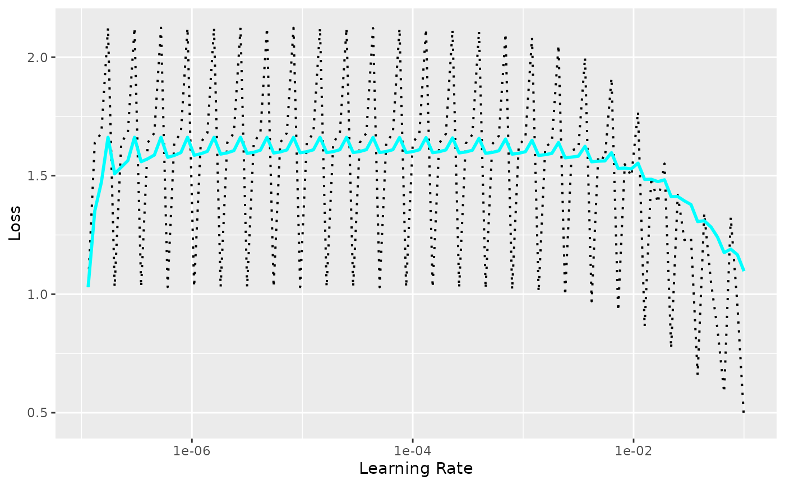

Learning Rate Finder
Usage
lr_finder(
object,
data,
steps = 100,
start_lr = 1e-07,
end_lr = 0.1,
log_spaced_intervals = TRUE,
...,
verbose = NULL
)Arguments
- object
An nn_module that has been setup().
- data
(dataloader) A dataloader created with torch::dataloader() used for learning rate finding.
- steps
(integer) The number of steps to iterate over in the learning rate finder. Default: 100.
- start_lr
(float) The smallest learning rate. Default: 1e-7.
- end_lr
(float) The highest learning rate. Default: 1e-1.
- log_spaced_intervals
(logical) Whether to divide the range between start_lr and end_lr into log-spaced intervals (alternative: uniform intervals). Default: TRUE
- ...
Other arguments passed to
fit.- verbose
Wether to show a progress bar during the process.
Examples
if (torch::torch_is_installed()) {
library(torch)
ds <- torch::tensor_dataset(x = torch_randn(100, 10), y = torch_randn(100, 1))
dl <- torch::dataloader(ds, batch_size = 32)
model <- torch::nn_linear
model <- model %>% setup(
loss = torch::nn_mse_loss(),
optimizer = torch::optim_adam
) %>%
set_hparams(in_features = 10, out_features = 1)
records <- lr_finder(model, dl, verbose = FALSE)
plot(records)
}
